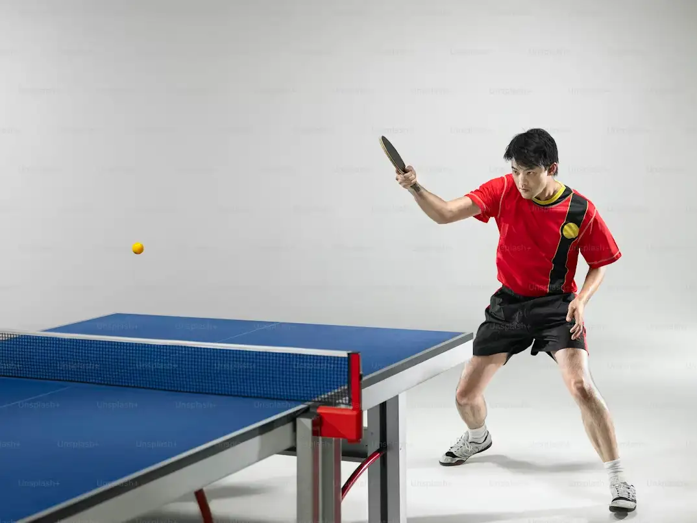
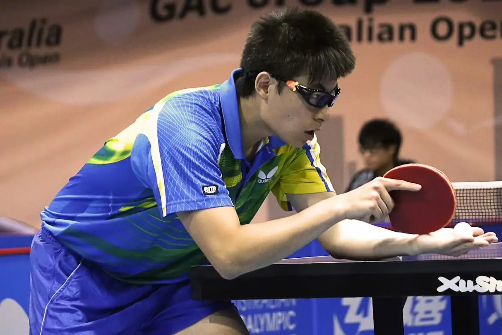

Discover and fall in love with table tennis!


Rules 🏓
- Games are played to 11 points
- Must win by at least 2 points
- Players serve two points each, then switch
- At 10–10, serve changes every point
- A legal serve must bounce on both sides
- Point is won if opponent fails to return correctly

Techniques
- Grip: Hold the paddle with a shakehand or penhold style
- Serve: Toss the ball and strike with spin or speed
- Forehand: Use strong forward strokes for attack
- Backhand: Quick returns with control and precision
- Spin: Add topspin or backspin to challenge the opponent
- Footwork: Move fast to stay balanced and ready